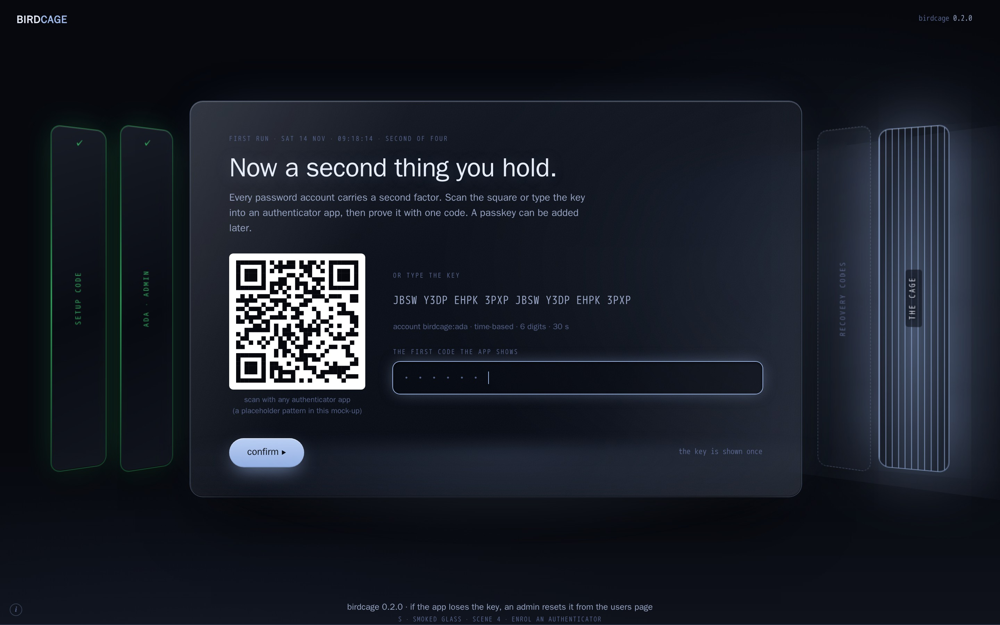
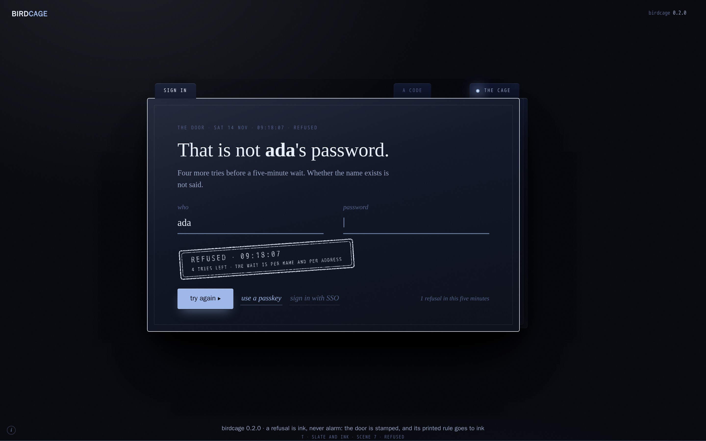
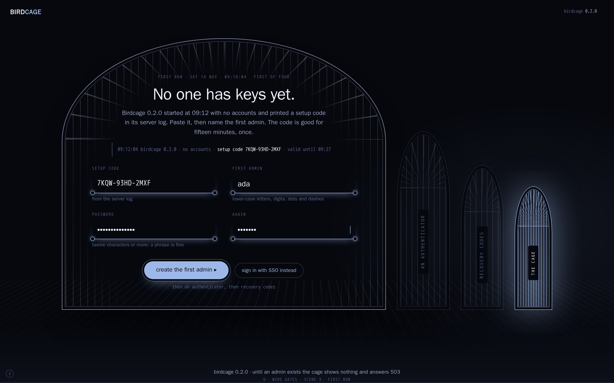

Round 8's R, "the doors", carried forward and developed three ways (#8, slice B). Each direction keeps the corridor — the step you are on is one door, the doors you have passed fold to spines on the left, the doors ahead wait on the right, the cage last — and answers differently what the doors are made of and how they move. Each page is one URL that scrolls through eight scenes: sign in, second factor, first run (the setup code from the server log), enrol an authenticator, recovery codes shown once, timed out over the dimmed dashboard, refused, and too many tries. Each has a motion page that loops the door-to-door transition and the last step into the cage, and stands still under reduced motion. Same data throughout: ada at the door from 192.0.2.10 on Sat 14 Nov, birdcage 0.2.0.
Doors of dark frosted glass hung in a deep room. The door in front of you is a pane you can almost see through; the ones you have passed swing away on their hinges and catch the light edge-on; the ones ahead wait in the depth; the cage is a lit pane whose bars show through the frost.

direction-s-smoked-glass.html ▸ scene 1 · sign in scene 2 · second factor scene 3 · first run scene 4 · enrol an authenticator scene 5 · recovery codes, shown once scene 6 · timed out scene 7 · refused scene 8 · too many tries motion-s.html · door to door, then into the cage ▸Doors as heavy cards on a desk, set in a serif. The card you have passed lifts and turns face down onto a pile at the left, ticked; the cards ahead sit squared under tabs at the right; a refusal is stamped on the card in ink; the last card's light opens and fills the desk.

direction-t-slate-and-ink.html ▸ scene 1 · sign in scene 2 · second factor scene 3 · first run scene 4 · enrol an authenticator scene 5 · recovery codes, shown once scene 6 · timed out scene 7 · refused scene 8 · too many tries motion-t.html · card to card, then the light opens ▸Doors as arched wire gates, the cage's own material. The gate in front of you has its wires parted down the middle; passed gates close behind you in green wire, narrow and folded; the gates ahead stand small down the corridor; the cage is the last arch, lit. A refusal turns the wires to ink; too many tries meshes the gate shut.

direction-u-wire-gates.html ▸ scene 1 · sign in scene 2 · second factor scene 3 · first run scene 4 · enrol an authenticator scene 5 · recovery codes, shown once scene 6 · timed out scene 7 · refused scene 8 · too many tries motion-u.html · gate to gate, then the wires fill the room ▸